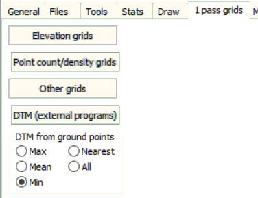

Tab on LIDAR point cloud analysis form. Creates a new grid or grids that matches the coverage of the base map for the point cloud display. Some options require you to have or create a DTM.
The one pass options can be done by looking at each lidar return only once, unlike for instance the median which requires multiple passes.
|
 |
|
Word shot densities: by default density will be stored in bytes (max 255); set this if you need up to 65K points. |
The one pass options can be done by looking at each lidar return only once, unlike for instance the median which requires multiple passes.
Denmark's procedures for DEM creation, using python and GDAL: https://bitbucket.org/GSTudvikler/gstdhmqc/src/tip/doc/howto_pc_to_dem.md?at=default&fileviewer=file-view-default
Last revision 1/17/2023